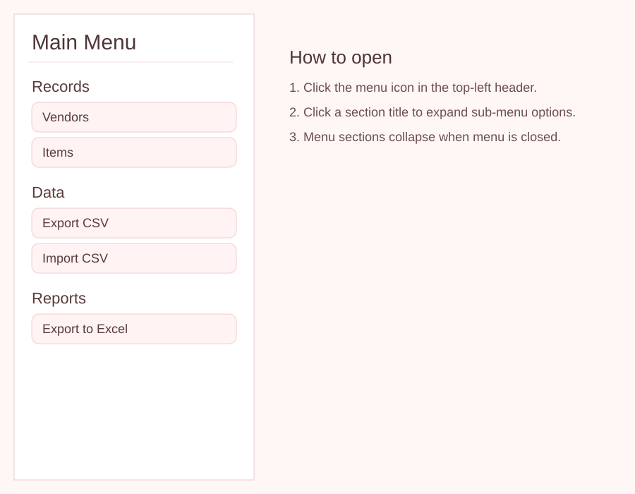
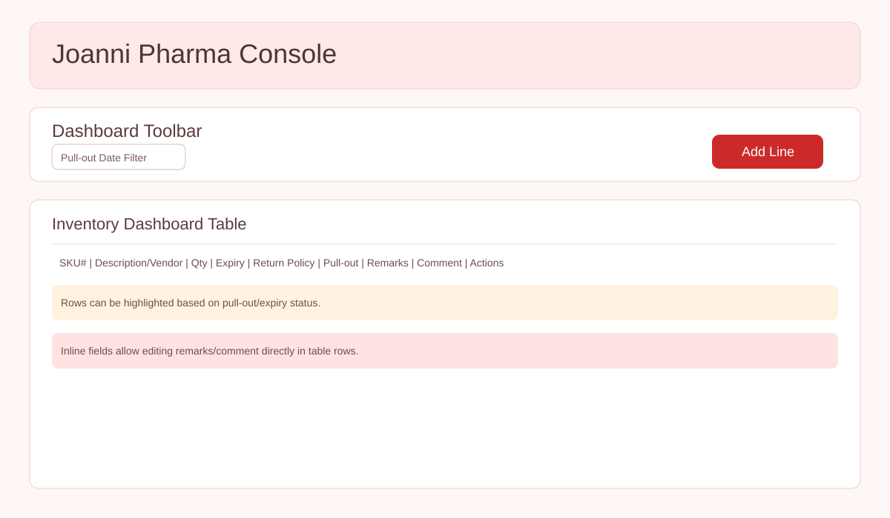
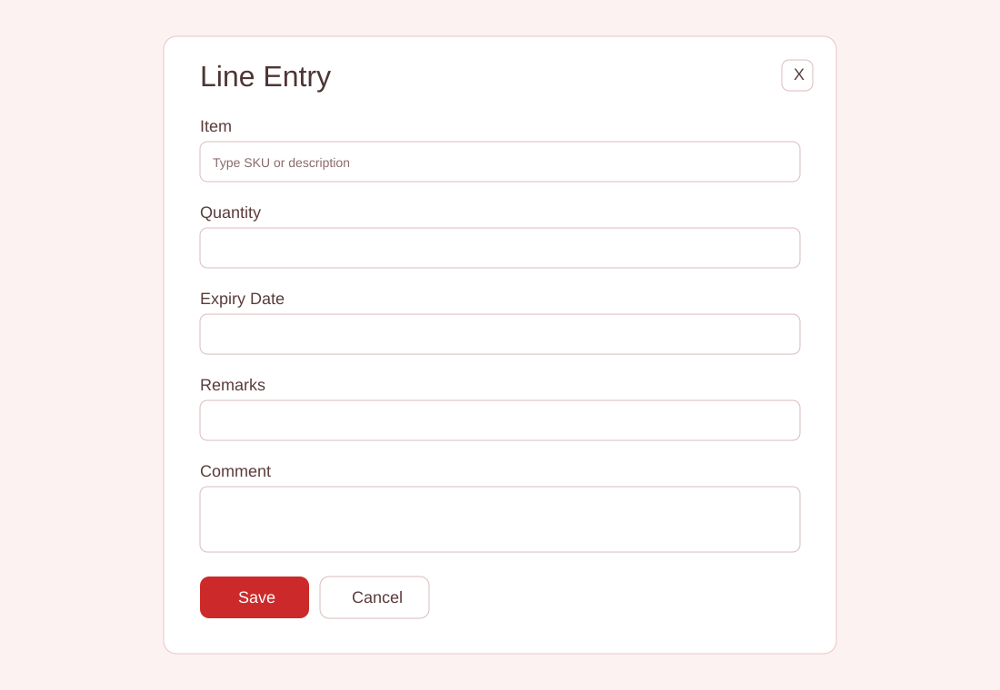
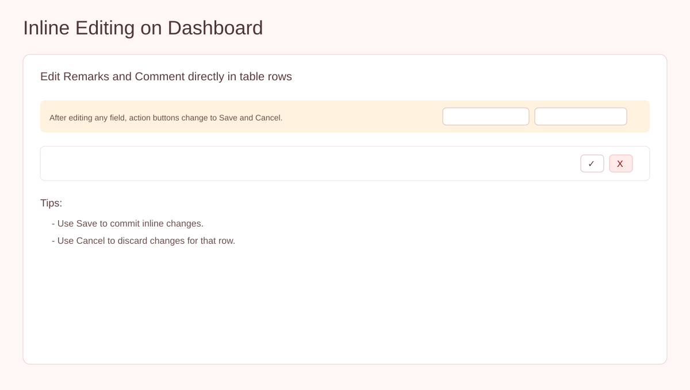
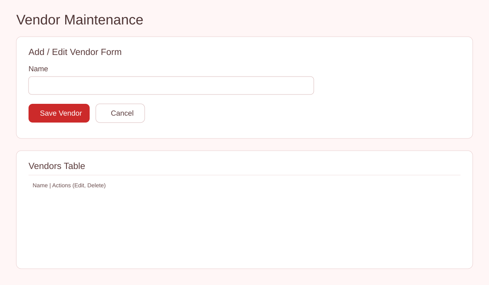
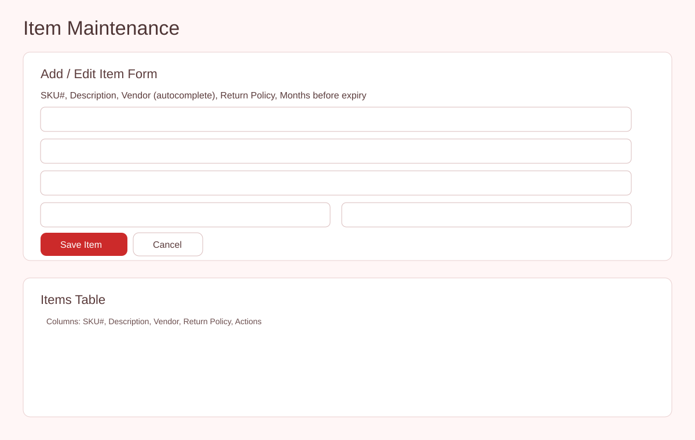
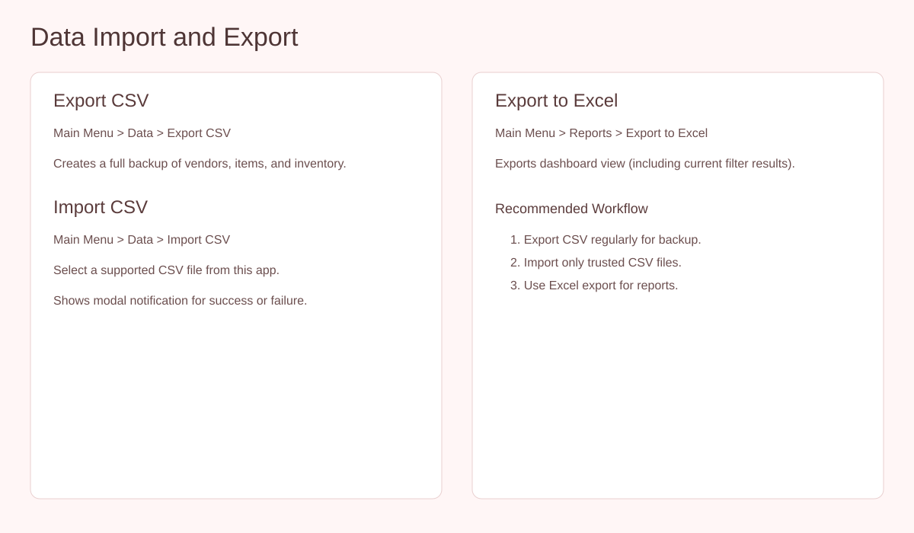
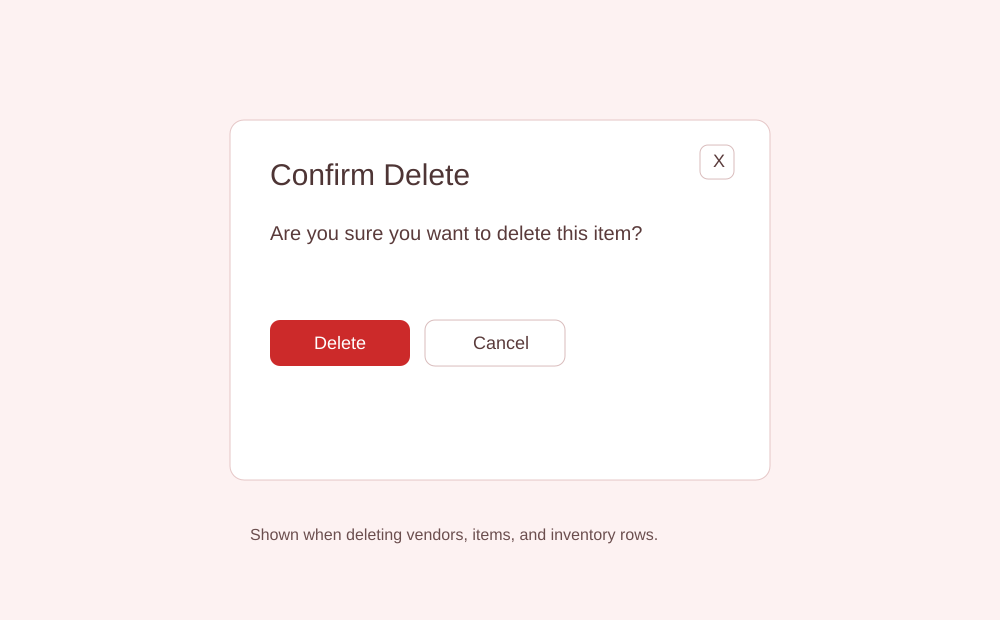

Joanni Pharma End-User Guide
This document explains how to use all features of the Joanni Pharma web app for day-to-day operations.
Table of Contents
- Getting Started
- Main Menu and Navigation
- Dashboard and Filter
- Add Inventory Line
- Inline Editing in Dashboard
- Vendor Maintenance
- Item Maintenance
- Import and Export (CSV)
- Export Report (Excel)
- Delete Confirmation and Notifications
- Troubleshooting
1. Getting Started
- Open the app in your browser.
- You will land on the Dashboard by default.
- Use the menu icon in the upper-left corner to access all sections.
2. Main Menu and Navigation
- Click the menu icon in the header to open the Main Menu.
- Only one submenu can stay expanded at a time (accordion behavior).
- Expand Records to open Vendors or Items maintenance.
- Expand Data to Export/Import CSV.
- Expand Reports to export Dashboard data to Excel.
- Expand Guide to open this End User Guide page.
- Close the menu by clicking outside, pressing Esc, or toggling menu icon.

Figure: Main Menu sections and available actions.
3. Dashboard and Pull-out Date Filter
- Use the month filter at the top-left of the toolbar to narrow rows by pull-out date.
- Click Add Line to create a new inventory record.
- Review table columns: SKU, Description/Vendor, Qty, Expiry, Return Policy, Pull-out, Remarks, Comment, Actions.
- Rows may highlight based on status (for pull-out, expired, or completed conditions).

Figure: Dashboard toolbar and table layout.
4. Add Inventory Line
- Click Add Line on the Dashboard.
- In the Line Entry modal, select an item using SKU/description autocomplete.
- Enter Quantity (optional) and Expiry Date.
- Set Remarks and optional Comment.
- Click Save to add the row, or Cancel to discard.

Figure: Add Line modal with required fields.
5. Inline Editing in Dashboard
- Edit Remarks and Comment directly in each row.
- Comment fields wrap and auto-grow while typing for easier long-note editing.
- After editing, row action buttons change to Save and Cancel.
- Click Save to commit or Cancel to revert inline changes.
- Use Mark Complete to toggle completion status; row fill updates immediately.

Figure: Inline editing workflow in dashboard rows.
6. Vendor Maintenance
- Open Main Menu > Records > Vendors.
- Add or edit vendor name in the form.
- When editing a vendor, cursor focus moves to the Name field automatically.
- Use table action buttons to edit or delete an existing vendor.
- If a vendor is in use by items, deletion is blocked with a notification modal.

Figure: Vendor form and vendor table.
7. Item Maintenance
- Open Main Menu > Records > Items.
- Enter SKU, Description, and select Vendor via autocomplete.
- When editing an item, cursor focus moves to the SKU field automatically.
- Choose Return Policy:
- By number of months
- On the month of expiry
- Save item, then manage entries using table action buttons.

Figure: Item maintenance form and list.
8. Import and Export (CSV)
- Export CSV: Main Menu > Data > Export CSV.
- Import CSV: Main Menu > Data > Import CSV and choose file.
- Watch for modal notification after import (success or failure).
- For best results, import CSV files that were exported from this app.

Figure: Data section actions for backup and restore.
9. Export Report (Excel)
- Open Main Menu > Reports > Export to Excel.
- The file contains Dashboard records and respects your current filter.
- The export includes a Completed column.
- Save the generated file for reporting or sharing.
10. Delete Confirmation and Notifications
- Deleting a vendor, item, or inventory row opens a confirmation modal.
- Click Delete to continue or Cancel to stop.
- Informational and error messages are shown in notification modals.

Figure: Confirmation modal used before deleting records.
11. Troubleshooting
Cannot delete vendor or item
This record is still referenced elsewhere. Remove dependent records first, then retry.
Import CSV failed
Use a CSV exported by this app and verify header/column order is unchanged.
No rows shown on dashboard
Clear or change the pull-out month filter and confirm inventory records exist.